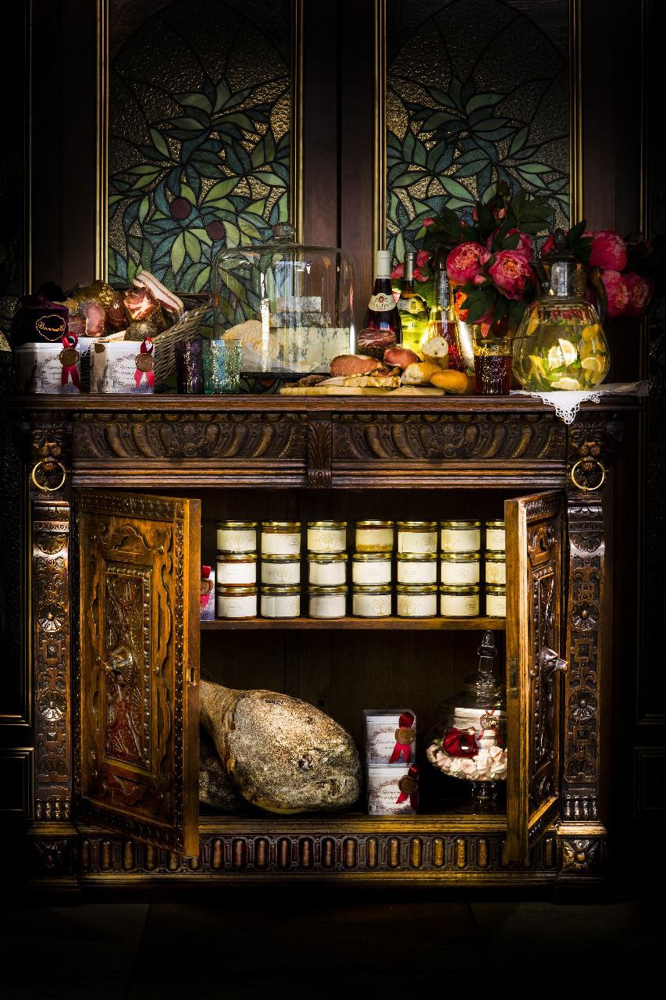

О Компании
“Вишневый сад” ресторан-кондитерская которая находится на рынке белее 10 лет переживая много изменений и сейчас имеет внутри себя производство совершенно разной продукции.
В кондитерской продукции вы можете встретить пироженные, конфеты, печенья, торты а также хлеба.
Также можно увидеть разные соусы и паштеты. Еще можно купить из готовой продукции заморозку - это вареники, блины и пельмени
Авторские блюда
Соусы
Паштеты
Десерты
Имя
Комментарий